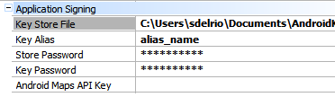

Specifies the key store file that will be used to sign an application that will be published in Google Play. Scope Platforms: Smart Devices(Android) Description
When you build in release mode you use your own private key to sign your application. If you don't have a private key, you can use the Keytool utility to create one for you. When you compile your application in release mode, the build tools use your private key along with the Jarsigner utility to sign your application's .apk file. Because the Certificate and private key you use are your own, you will have to provide the password for the keystore and key alias. About the Android certificate
Samples
C:\Users\<UserName>\Documents\AndroidKeyStore\GeneXusLabsKey.keystore  See Also
|